Prosessin hallintaa ja lokeja
24.03.2020, Kristian KoponenTehtävänanto
Linux-palvelimet h8
Käytetyt laitteet
Lenovo ThinkPad X220
| Prosessori: | Intel(R) Core(TM) i5-2540M @ 2.60Ghz |
|---|---|
| Keskusmuisti: | 4GiB 1333Mhz DDR3 |
| Näytönohjain: | Intel HD Graphics 3000 |
| Käyttöjärjestelmä: | Windows 10 64-bit |
SanDisk Ultra USB 3.0 32 GB
xubuntu 18.04.3 amd64 -liveKuormitusta yli ajan
Tietysti palvelin hidastelee juuri silloin, kun olet nukkumassa. Seuraisipa joku kuormitusta tuolloin. Asenna heti aluksi jokin ohjelma seuraamaan kuormitusta, jotta voit tarkastella sitä koko tehtävän ajalta. Sopivia ohjelmia ovat esimerkiksi 'munin' ja sysstat ('sar').
Aiemmassa harjoituksessa asensin Muninin, vaikken sen käyttöön perehtynyt kovin syvällisesti, päätin nyt kokeilla sysstatia. Asennetaan kyseinen ohjelma.
$ sudo apt-get install sysstat -y
Selvitetään miten sysstatilla saadaan kerättyä tietoa. sysstatin github-sivulta saadaan peruskomentoja sysstatin käyttöön.
sar collects, reports and saves system activity information (see below a list of metrics collected by sar)
$ sar
Cannot open /var/log/sysstat/sa24: No such file or directory
Please check if data collecting is enabled
Selvisi että datankeräys on laitettava konfiguraatiossa päälle.
$ sudoedit /etc/default/sysstat
#
# Default settings for /etc/init.d/sysstat, /etc/cron.d/sysstat
# and /etc/cron.daily/sysstat files
#
# Should sadc collect system activity informations? Valid values
# are "true and "false". Please do not put other values, they
# will be overwritten by debconf!
ENABLED="true"
Täytyy vielä käynnistää sysstat uudelleen.
$ sudo service sysstat restart
Nyt datankeräys toimii.
$ sar
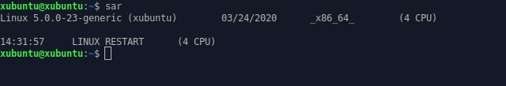{kind=link}
Kuormita järjestelmän eri osa-alueita
Kuormita järjestelmän eri osa-alueita. Esim. 'stress'. Etsi prosessi toisesta ikkunasta 'top' tai 'htop', järjestystä voi vaihtaa "P" ja "M".
Asennetaan stress- ja htop-ohjelmat
$ sudo apt-get install stress htop -y
Avataan htop toiseen ikkunaan. Tilanne ennen kuormitusta näyttää tältä. Load Average heittelehtii 0.01 - 0.07 rajamailla ja prosessorin käyttö on lähellä nollaa.
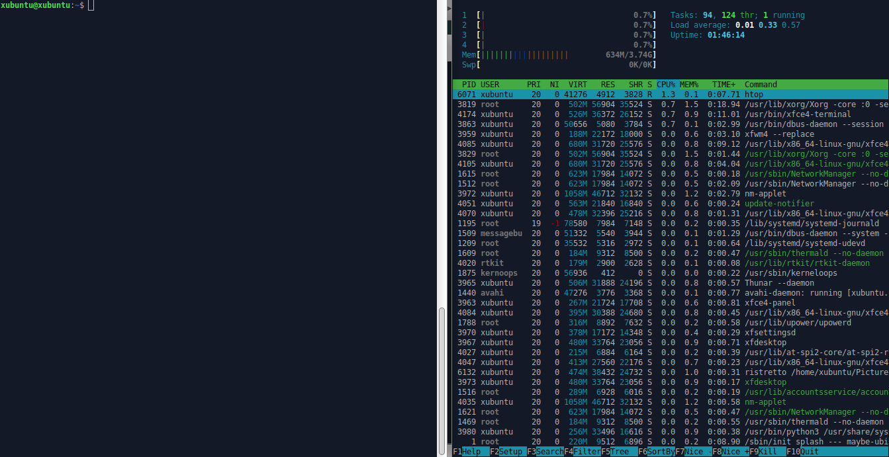{kind=link}
Ajetaan stress-ohjelmalla prosessoriin, I/O:hon ja muistiin vaikuttavia prosesseja 30 sekunnin ajan.
$ stress --cpu 8 --io 4 --vm 2 --vm-bytes 128M --timeout 30s
stress: info: [5803] dispatching hogs: 8cpu, 4 io, 2 vm, 0 hdd
Koneen tuulettimet pärähtävät käyntiin ja htopin mittarit menevät punaiselle, joten päätellään että kuormitus on käynnissä. Alla kuormituksen aikaista tietoa.
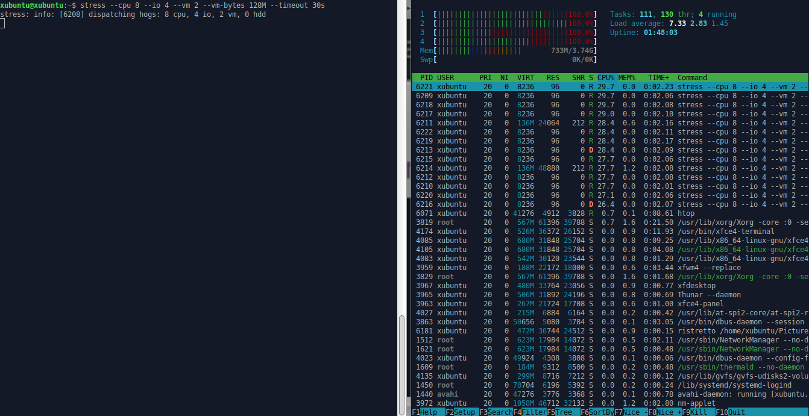{kind=link}
Load average on noussut lukemaan 7.33 ja prosessorin ytimet kaikki käytössä.
Kokeile käytännössä
Kokeile käytännössä, selitä ja analysoi. Muista selittää, mitä komennolla halutaan selvittää ja tulkitse kokeilusi tulokset. Aiheuta tarvittaessa kuormaa tai muuta työkalulla näkyvää tulkittavaa.
ss --listening --tcp --numeric; ss --listening --tcp; ss --tcp; ss --listening --udp;
grep -i error /var/log/syslog; grep -ir error /var/log/
iotop; iotop -oa
top on komentoriviohjelma, jolla voi interaktiivisesti tarkkailla ja hallita koneella pyöriviä prosesseja. Lähde
iotop on komentoriviohjelma, joka näyttää reaaliaikaisesti kunkin prosessin aiheuttaman levyliikenteen top-ohjelman tyylisesti. Lähde
Asennetaan iotop
$ sudo apt-get install iotop -y
Tarkastellaan iotopin manuaalia selvittääksemme -oa valintojen merkityksen.
$ man iotop
-o, --only
Only show processes or threads actually doing I/O, instead of showing all processes or threads. This can be dynamically toggled by pressing o.
-a, --accumulated
Show accumulated I/O instead of bandwidth. In this mode, iotop shows the amount of I/O processes have done since iotop started.
-oa valinnoilla saadaan siis I/O-lukemaa iotopin käynnistyksestä lähtien vain niistä prosesseista, jotka suorittavat kirjoittavat tai lukevat sillä hetkellä.
$ sudo iotop -oa
Alla tilanne, kun koneella ei tehdä juurikaan mitään.
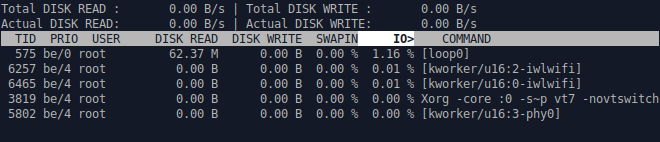{kind=link}
Käynnistetään Firefox ja selataan ankkakuvia. Katsotaan mitä tapahtuu.
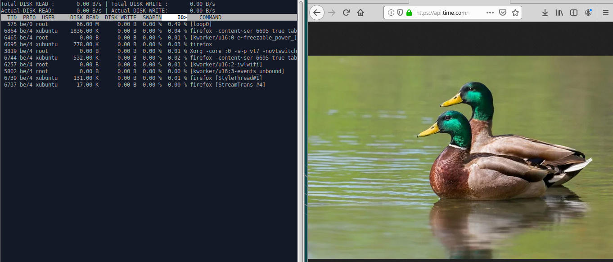{kind=link}
Firefox lukee levyltä tietoa.
dstat
Dstat on ohjelma, joka näyttää erilaisia tietoja järjestelmästä reaaliajassa. Lähde
Tätä laajentaakseni kyseinen tieto on siis prosessorin käyttöä, I/O:ta, verkkoliikennettä ja sivutusta.
Asennetaan dstat
$ sudo apt-get install dstat -y
Tarkastellaan dstat-näkymää, kun ei tehdä mitään.
$ dstat
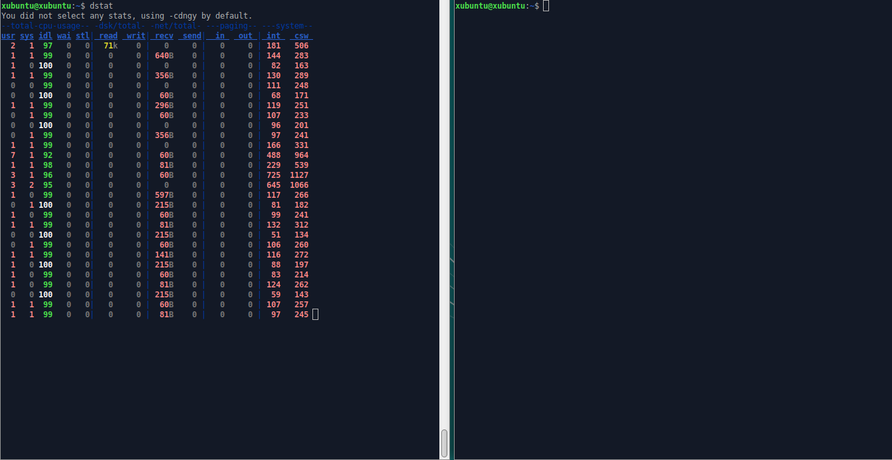{kind=link}
Asennetaan uusia ohjelmia ja tarkastellaan mitä dstatissa tapahtuu. Syötetään vaikka toisessa harjoituksessa luotu "unelmien apt-get -komento"
$ sudo apt-get install vlc ffmpeg gimp blender pinta deluge -y
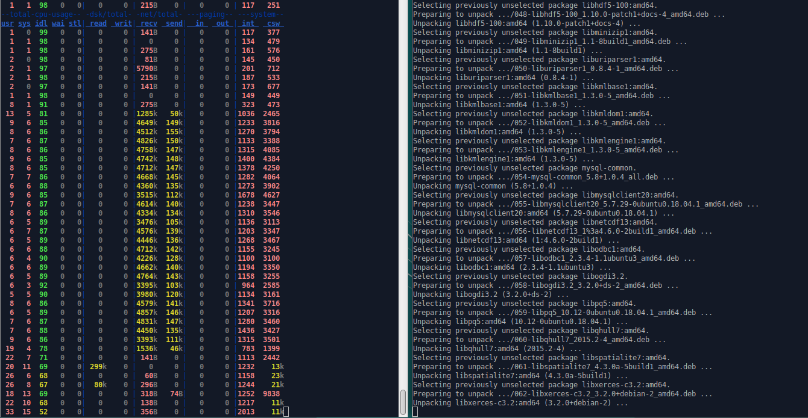{kind=link}
Verkkoliikenteen lukemat nousevat ja ajoittain myös levyn read-arvo, mutta niin nousee myös prosessoriin toimintaan viittaavat int ja csw arvot.
csw eli Context Switch tarkoittaa sitä kun prosessori vaihtaa yhden prosessin tai ketjun toiseen. Tämän avulla prosessori voi suorittaa useita eri prosesseja samanaikaisesti.
int eli Interrupt tarkoittaa signaalia, joka lopettaa yhden prosessin suorittamisen, että se voi alkaa suorittamaan toista välittömästi.
ss --listening --tcp --numeric; ss --listening --tcp; ss --tcp; ss --listening --udp;
$ man ss
ss is used to dump socket statistics. It allows showing information similar to net-stat. It can display more TCP and state informations than other tools.
ss on siis verkkoliikenteen seuraamiseen käytettävä työkalu.
--listening, -l näyttää vain kuunneltavat pistokkeet (eng. socket)
--tcp, -t näyttää vain TCP-pistokkeet
--numeric, -n antaa käytettävät portit numeerisina, nimien sijaan. Esim. 127.0.0.1:ipp > 127.0.0.1:631
--udp, -u näyttää vain UDP-pistokkeet.
Kokeillaan mitä kuunneltavia TCP-yhteyksiä näkyy.
$ ss -t -l -n
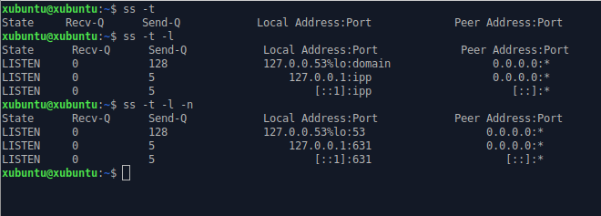{kind=link}
Yllä olevasta kuvankaappauksesta nähdään myös miten -l ja -n argumentit muuttavat tulostetta.
Asennan SSH-demonin, jotta voidaan siirtää harjoituksen aikana otetut kuvankaappaukset SCP:n välityksellä pöytäkoneelle, jolla kirjoitan tätä raporttia. Tarkastellaan uudelleen TCP-yhteyksiä.
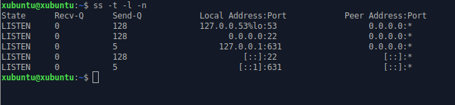{kind=link}
Tulosteeseen on ilmestynyt kaksi prosessia, jotka kuuntelevat porttia 22.
Käytetään pelkkää TCP-argumenttia ja avataan Firefox. Katsotaan mitä näkyy.
$ ss -t
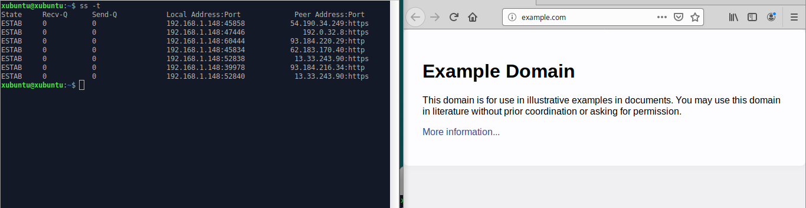{kind=link}
Näkyy useita http ja https yhteyksiä.
Viimeisimpänä tarkastellaan vielä mitä UDP-yhteyksiä ss-työkalulla saadaan.
$ ss -l -u
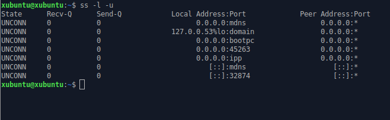{kind=link}
grep -i error /var/log/syslog; grep -ir error /var/log/
Seuraavalla komennolla haetaan syslokista kaikki rivit joilla lukee "error". -i (--ignore-case) argumentti jättää isot ja pienet kirjaimet huomiotta.
$ grep -i error /var/log/syslog
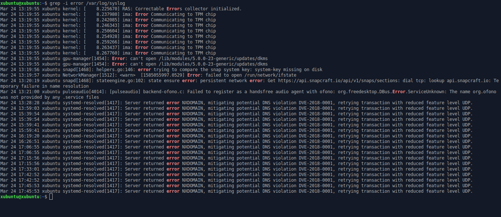{kind=link}
Koneen buuttauksen aikoihin näkyy muutamia kohtia TPM-piirin ja gpu-managerin kanssa. TPM-piirin virheet vaikuttavat hieman huolestuttavilta, mutta käytän harjoituksessa Linux-livetikkua, joten tällä hetkellä asia ei ole painavin. Selvittelen asiaa ja käyn läpi BIOS-asetukset myöhemmin.
Alempana toistuvaa systemd-resolved virheilmoitusta selvittäessäni selvisi, että kyseinen virhe tulee kun DNS-järjestelmä ei kykene selvittämään nimeä. Toistin virheen useaan kertaan kirjoittamalla selvästi virheellisen nimen selaimeen.
Seuraavalla komennolla haetaan kaikista log-kansiossa olevista tiedostoista error-sanan sisältävät rivit. -r (--recursive) lukee kaikki tiedostot jokaisesta kansiosta rekursiivisesti.
$ grep -ir error /var/log/
Tällä komennolla saadaan samat virheilmoitukset kuin yllä olevat, mutta myös joitakin apt-get komentojen aiheuttamia virheilmoituksia paketeista.
Load average
Load average näkyy esim 'uptime', 'top', 'htop'. Prosessoriydinten määrä näkyy 'nproc'. Miten load average tulkitaan? Miksi prosessoriydinten määrä on tässä kiinnostava?
uptime kertoo kellonajan, käynnissäoloajan, kirjautuneet käyttäjät, keskimääräisen kuormituksen (eng. load average) 1, 5 ja 15 minuutin ajalta.
nproc kertoo ydinten määrän.
Testataan kuormittamalla konetta ja katsotaan load average
$ stress --cpu 8 --io 4 --vm 2 --vm-bytes 128M --timeout 10s
$ uptime; nproc
{kind=link}
Koneessa on neljä ydintä käytössä. Yhden minuutin aikana load average oli 2.63, joka on neljälle ytimelle jaettuna 66% kuormitus. Kun load average ylittää 4, tulee kone hidastumaan huomattavasti, sillä kaikkia prosesseja ei voida suorittaa. Hyvässä tilanteessa kuormitus ei koskaan ylitä 70%, jotta jäisi hieman suojavaraa.
Lopun kuormitustiedot
Analysoi lopuksi koko ajalta keräämäsi kuormitustiedot. Löydätkö esimerkiksi aiheuttamasi kuormituspiikin?
Palataan sysstat ohjelmaan ja tarkastellaan harjoituksen aikana kerättyä tietoa.
$ sar
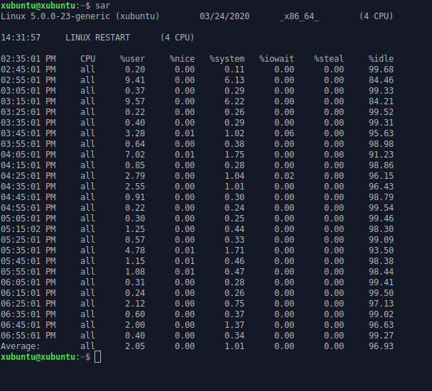{kind=link}
%user - CPU:n käyttö käyttäjätasolla, eli sovellukset.
%nice - CPU:n käyttö käyttäjätasolla nice-prioriteetilla.
%system - CPU:n käyttö järjestelmätasolla, eli kernel.
%iowait - Aikamäärä kun CPU oli idlenä, kun järjestelmällä oli huomattava määrä I/O -pyyntöjä.
%steal - Aikamäärä kun virtuaali-CPU odotti kun hypervisor palveli toista virtuaaliprosessoria
%idle - Aikamäärä kun CPU oli idlenä, kun järjestelmällä ei ollut huomattavaa määrää I/O -pyyntöjä.
sysstat on ottanut tietoa 10 minuutin välein. Valtaosa harjoituksesta on mennyt komentojen ja työkalujen selvittelyyn, sekä raportin kirjoitteluun kakkoskoneella. Harjoitukseen käytetty kone on pyörinyt suurimman osan ajasta idlellä. Silloin tällöin näkyy pientä poikkeamaa sovelluksien ja järjestelmän puolesta kun konetta on kuormitettu.
Suurimmat piikit klo. 03:15:01 PM ja 04:05:01 PM
Lähteet
http://terokarvinen.com/2020/linux-palvelimet-2020-alkukevat-kurssi-ict4tn021-3010/#h8
https://github.com/sysstat/sysstat#readme
https://arstech.net/how-to-fix-error-please-check-if-data-collecting-is-enabled/
https://www.linux.fi/wiki/Top
https://www.linux.fi/wiki/Iotop
https://www.linux.fi/wiki/Dstat
https://www.networkworld.com/article/3291616/examining-linux-system-performance-with-dstat.html
https://www.computerhope.com/jargon/c/contextsw.htm
https://www.techopedia.com/definition/3373/interrupt-computing
https://linux.die.net/man/8/ss
https://scoutapm.com/blog/understanding-load-averages